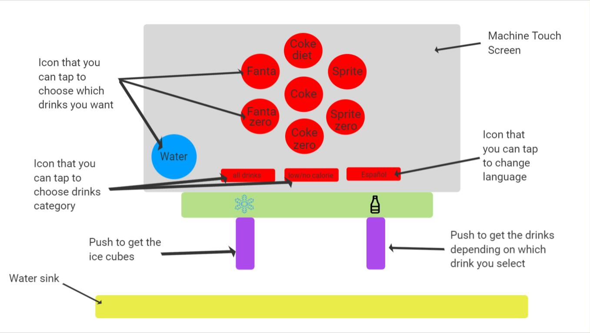
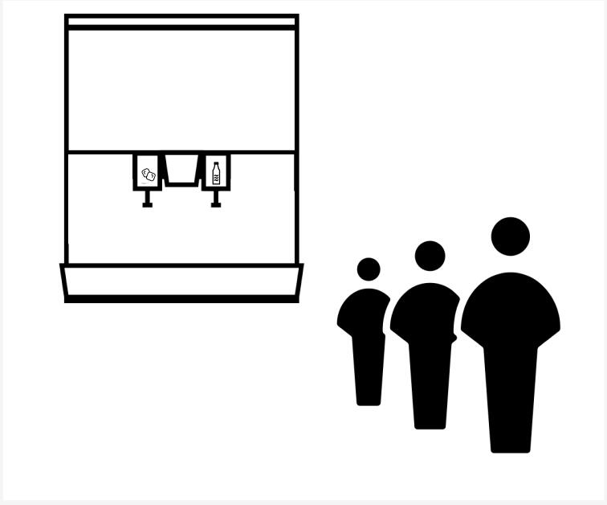
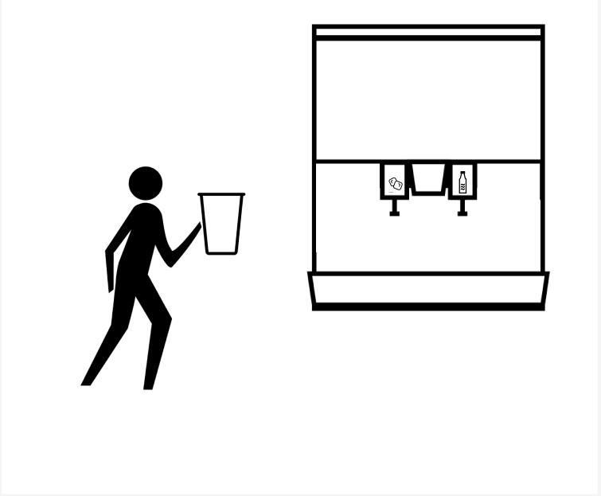
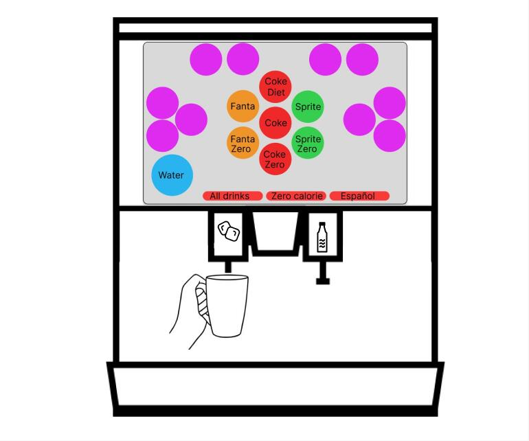
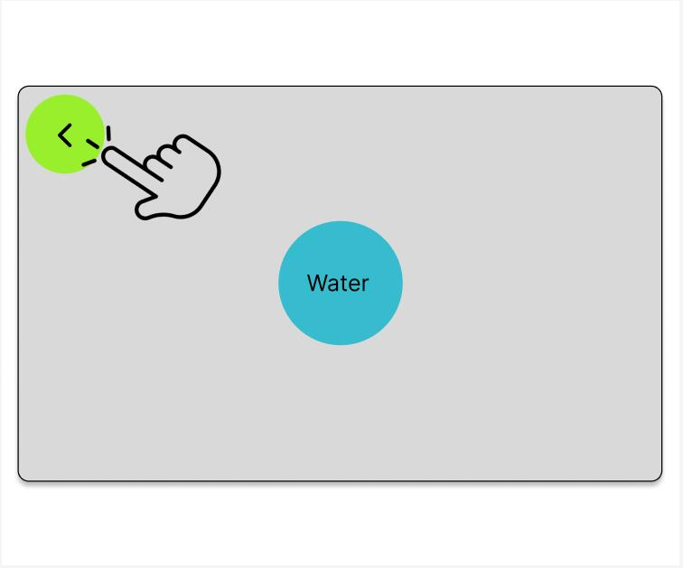
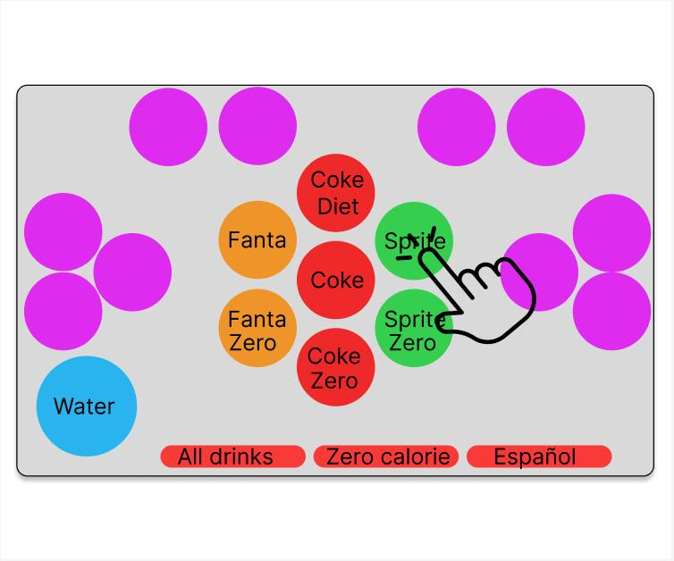
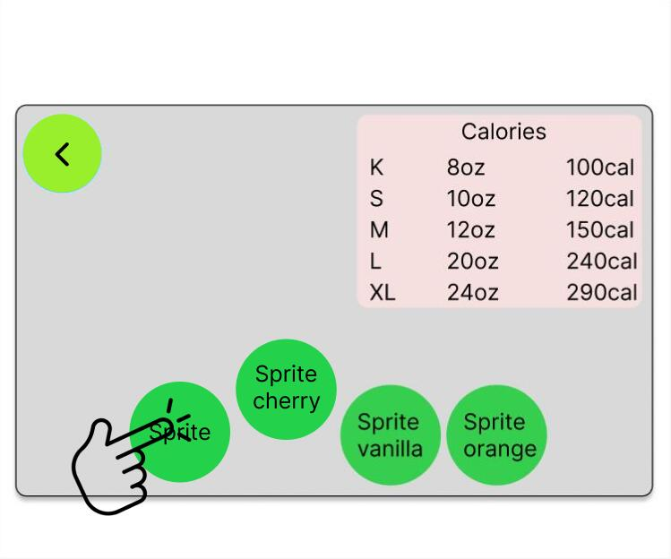
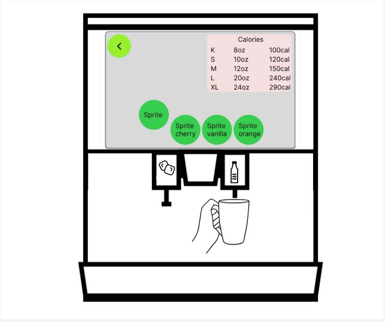

Introduction & Description of the Interface
Coca cola Soda fountain can be found everywhere, which a lot of people uses all the time. Therefore, I'm focusing on observing the Coca Cola Soda Fountain in our Sharpe Refectory Dining Hall in order to get a better understanding of it's interface design, and whether it has some space for improvements. The figure down below is a coca cola touch screen soda fountain in Sharpe Refectory Dining Hall. You can tap different icon on the screen to get different drinks accordingly.

Questions & Observations
- Have you ever pushed the handle on the left and there’s no ice popping out?
- Do you think this machine is very easy and convenient to use?
- Do you think it is better to show how much you poured when you poured your drink?
- Have you ever saw someone who was having trouble using this machine?
- Do you use the category function on the bottom very often?
- They often push the left handle and there's no ice, so it would be better to show on the screen whether it has ice or not
- When they did not get the ice when pushing the left handle, they will usually push it again or push and hold the handle for a few second to make sure it is out of ice.
- It’s better to show the volume of drinks and the calories you poured while you are pouring.
- The icon on the screen is not big enough, and sometimes it is easy to hit the wrong icon and get the wrong drinks.
- They just tap on the icon above, all the drinks are showed above, no one use the bottom category selection function.
Persona Empathy Map


Storyboard (Jack)

1. There is a line in front of the soda fountain machine, he needs to wait in line in order to get some sprite.

2. Finally, it is his term, he takes a cup.

3. He first wants to get some ice before pouring drinks, but there is no icon suggests if the machine has ice or not right now,
so he push the left handle to get some ice hoping it has ice.

4. However, after waiting for two seconds, there's nothing coming out. Maybe the machine is temporary out of ice. But there are
lots of people behind him waiting for him to finish, so he doesn't have time to wait for the ice.

5. He then look at the screen, it is on the water page that the previous person leaves behind. So he taps on the back icon.

6. Then the interface changes back to the main menu. He then taps on the sprite icon because he wants to drink some sprite.

7. The interface changes yet again into sprite page. He clicks the sprite icon again to make sure he selected the regular sprite.

8. He then pushes the right handle to pour the sprite. But because there's still lots of people waiting, there's
no time for him to wait for the ice, so he has to drink normal sprite. Very sad.